Cable-Driven Parallel Robots
Cable-driven parallel robots use cables instead of rigid links to move an end-effector through space. They are lightweight, scalable to large workspaces, and capable of exerting high forces — making them well-suited for tasks that conventional robot arms cannot reach. The challenge: cables can only pull, not push. This single constraint shapes everything — from how the robot moves, to where it can go, to how you plan its motions safely.
When a cable robot moves, its cables sweep through space — and they can collide with obstacles in the environment, or with each other. Unlike a rigid-link arm where the geometry is fixed, cable paths change continuously with the robot's configuration. Planning motions that are both reachable and collision-free is a core unsolved challenge.
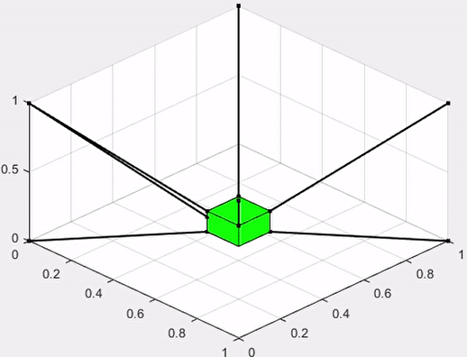
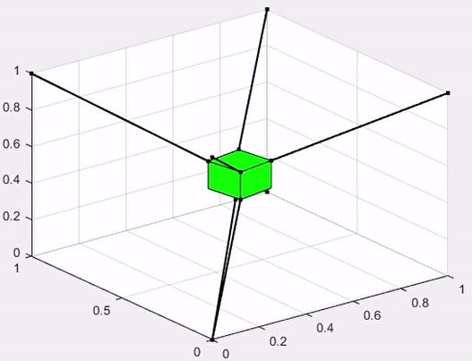
Before planning any motion, you need to know what the robot's reachable workspace looks like — accounting for cable tension limits, interference, and force balance. These images show the computed workspace under different cable configurations and constraint conditions.
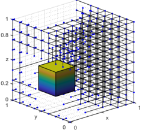
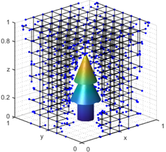
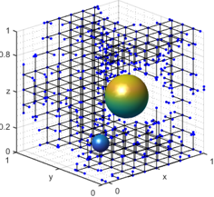
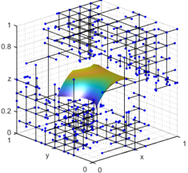
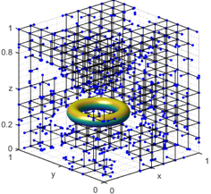
How obstacles occupy the workspace — the black lines indicate the collision-free regions.
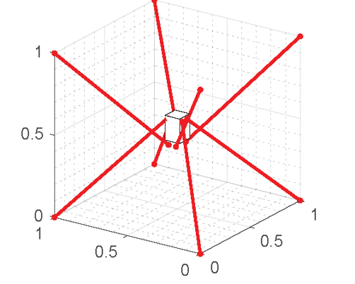
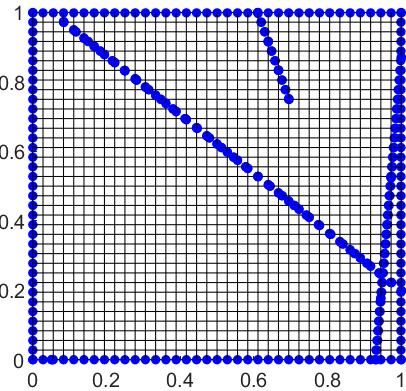
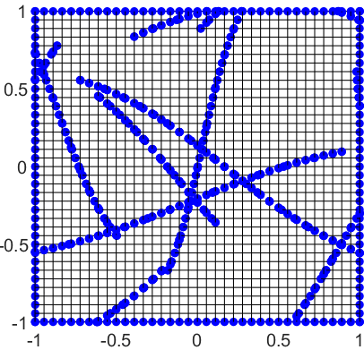
How the cable-cable collision workspace boundary (blue dots) looks like.
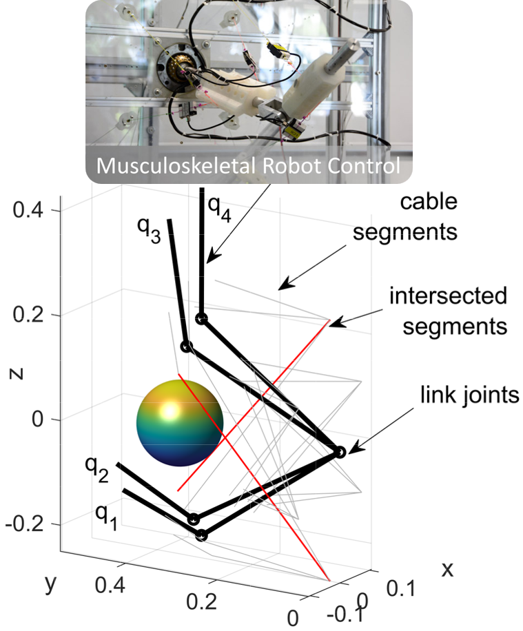
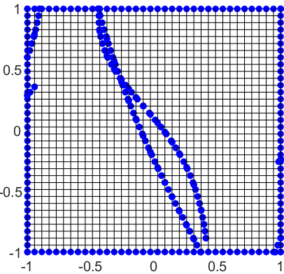
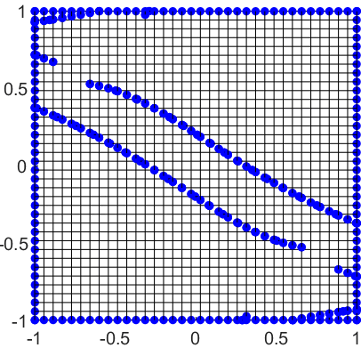
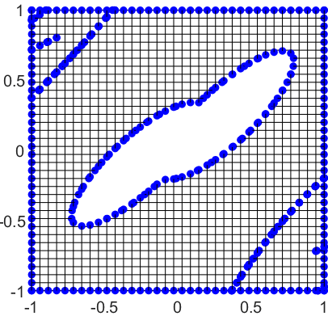
The method generalises to all types of cable-driven parallel robots and any obstacles that can be described by parametric equations.
Knowing the workspace is not enough — you need to verify that the entire planned trajectory satisfies wrench closure (the robot can actually hold the pose) and is free of cable interference. I further develop the ray-based method to analytically check these conditions efficiently along an entire trajectory, enabling real-time verification.
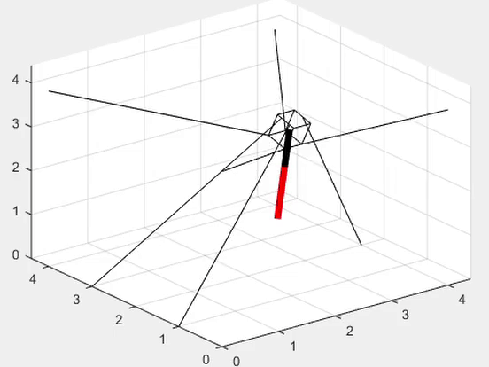
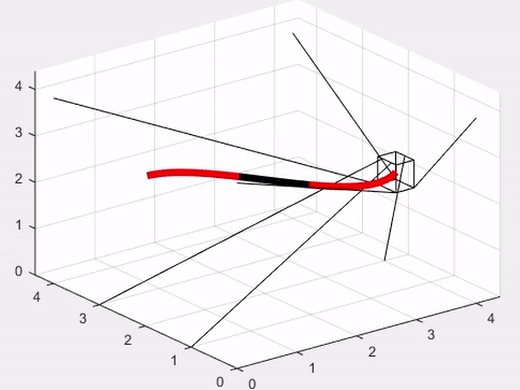
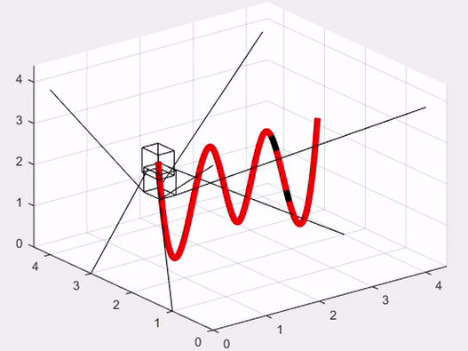
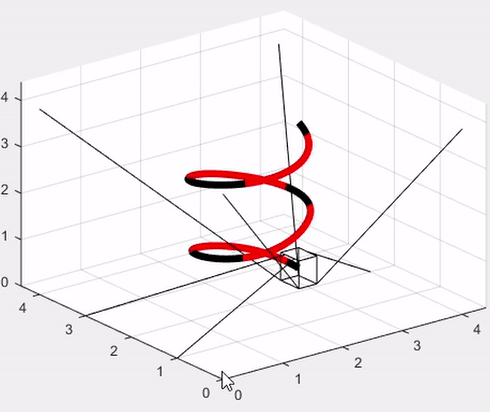
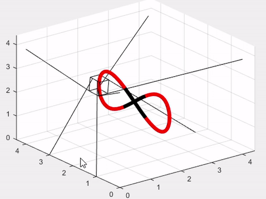


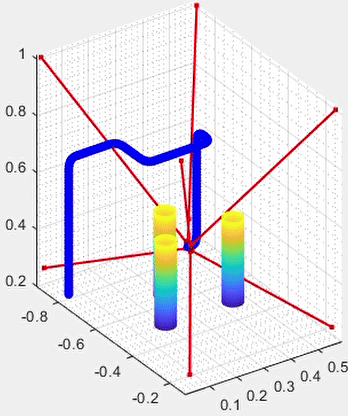
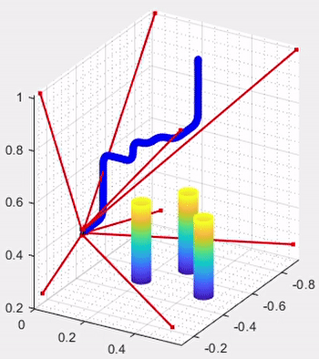
All of the above assumes fixed cable anchor points. But what if you could move them? A reconfigurable cable robot changes where its cables attach to the frame — effectively giving it a new body for each task. This dramatically expands what the robot can do, but introduces a new question: where should the anchors be?
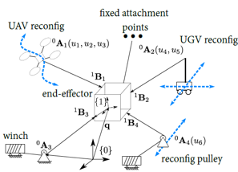
For each possible anchor placement, the robot has a different reachable workspace. We can analytically find how their workspace looks like in reverse.
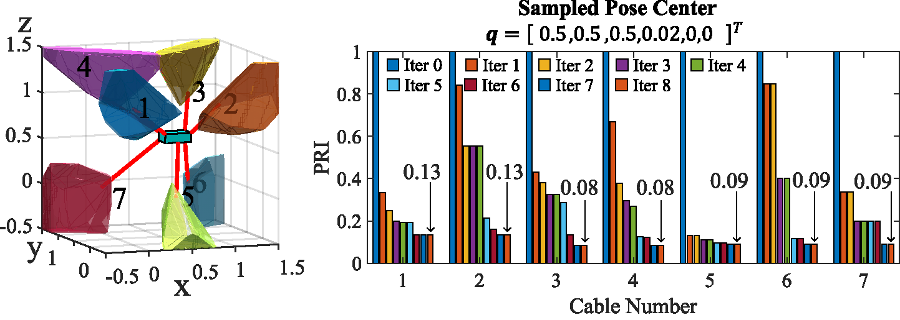
Choosing the best anchor positions is a high-dimensional optimisation problem — the search space grows exponentially with the number of cables and degrees of freedom. I developed the first analytical framework for optimising cable attachment locations across varying workspace conditions, providing a systematic solution rather than trial-and-error.
In practice, a reconfigurable cable robot needs to make reconfiguration decisions during operation — not just at design time. This demands algorithms fast enough to run in real time, which is far more demanding than offline optimisation. These results show early progress toward real-time anchor reconfiguration planning.
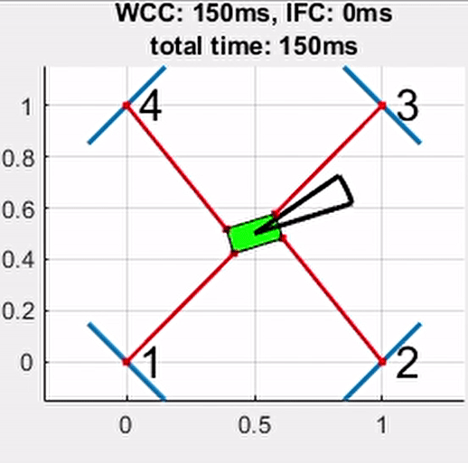
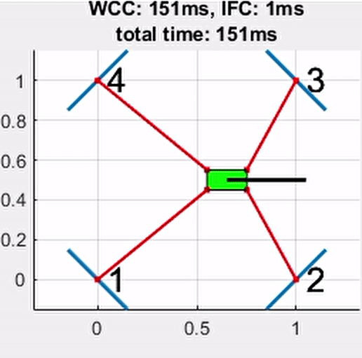
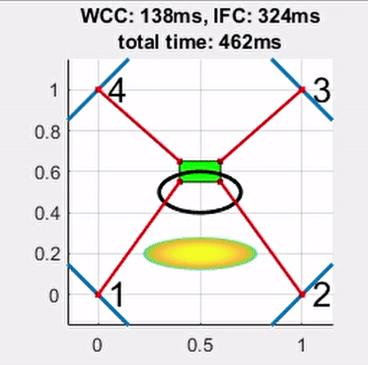
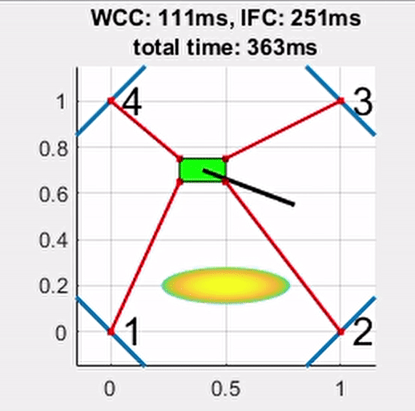
Under preparation.
Two ongoing research directions building on this foundation: